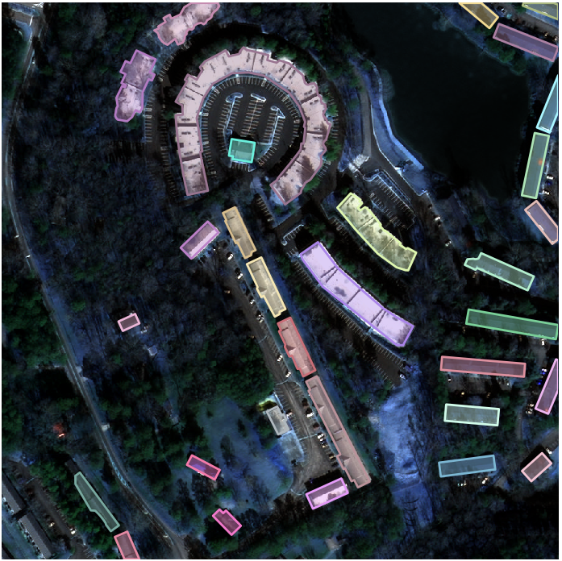
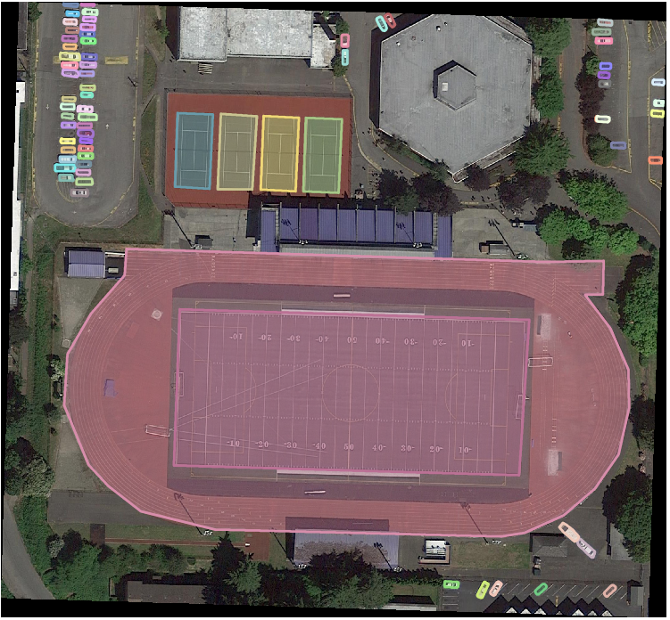
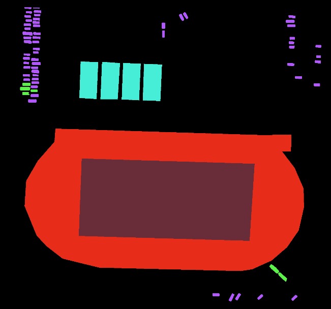

Usage
Requirements¶
Your data directory should look as follows:
Example:
.
├── images
│ ├── train
│ ├── val
| ├── test
|
├── annotations
│ ├── train.json
│ ├── val.json
│ ├── test.json
Usage is similar to how you would use pycocotools.
from coco_assistant import COCO_Assistant
# Specify image and annotation directories
img_dir = os.path.join(os.getcwd(), 'images')
ann_dir = os.path.join(os.getcwd(), 'annotations')
# Create COCO_Assistant object
cas = COCO_Assistant(img_dir, ann_dir)
Package features¶
1. Merge datasets¶
The merge function allows you to merge multiple datasets.
>>> cas = COCO_Assistant(img_dir, ann_dir)
loading annotations into memory...
Done (t=0.09s)
creating index...
index created!
loading annotations into memory...
Done (t=0.06s)
creating index...
index created!
>>> cas.merge()
Merging annotations
100%|█████████████████████████████████████████████████████████████████████| 2/2 [00:00<00:00, 14.72it/s]
The merged dataset (images and annotation) can be found in ./results/merged
2. Remove categories¶
Removes a specific category from an annotation file.
>>> cas = COCO_Assistant(img_dir, ann_dir)
loading annotations into memory...
Done (t=0.09s)
creating index...
index created!
loading annotations into memory...
Done (t=0.06s)
creating index...
index created!
# In interactive mode
>>> cas.remove_cat(interactive=True)
['tiny.json', 'tiny2.json']
Choose directory index (1:first, 2: second ..):
1
Categories present:
['building', 'vehicles']
Enter categories you wish to remove as a list:
['building']
Removing specified categories...
# In non-interactive mode
>>> cas.remove_cat(interactive=False, jc="tiny.json", rcats=['building'])
Removing specified categories...
The modified annotation can be found in ./results/removal
3. Generate annotation statistics¶
-
Generate countplot of instances per category that occur in the annotation files.
>>> cas.ann_stats(stat="area",arearng=[10,144,512,1e5],save=False) -
Generate pie-chart that shows distribution of objects according to their size (as specified in areaRng).
>>> cas.ann_stats(stat="cat", arearng=None, show_count=False, save=False)
4. Visualise annotations¶
Couldn't pycocotools visualise annotations (via showAnns) as well? Sure it could, but I required a way to freely view all the annotations of a particular dataset so here we are.
>>> cas.visualise()
Choose directory index (1:first, 2: second ..):
['tiny', 'tiny2']
1

5. Generate segmentation masks¶
The cas.get_segmasks() function allows you to create segmentation masks from your MS COCO object detection datasets. Please ensure your category ids start from 1. Similar to the Pascal VOC dataset, the mask values are their classes and a colour palette is applied (optional) to enable visualisation. The generated masks are stored in the ./results folder. Samples are shown below.
| Detection | Segmentation | |
|---|---|---|
| SpaceNet |  | |
| iSAID |  |  |